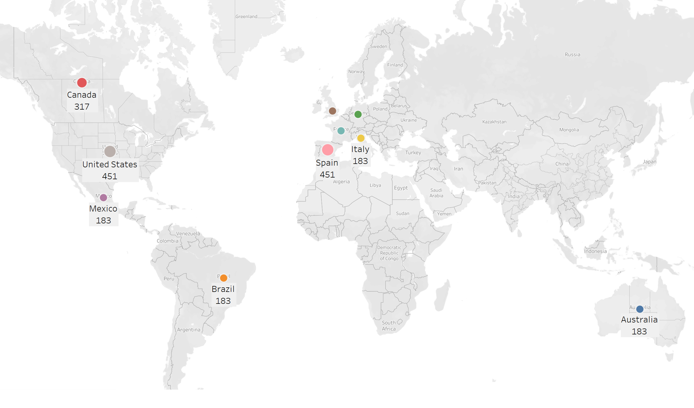

Narrative Visualization Of Netflix Userbase Dataset for CS416 Data Visualization Final Project at UIUC
A Snapshot of a sample Netflix Userbase
Created by Sushma Ponna
About the Visualization
The narrative Visualization follows an interactive slideshow with three scenes to guide the users through different scenarios. Users can navigate through screens by clicking the Previous/Next buttons. The tooltips along with the selection options offer a great deal of information to the users. Modifying the selection buttons triggers changes in the charts which make the visualization interactive.
The purpose of this visualization is to explore and provide a snapshot of the summary statistics of a sample Netflix userbase, showcasing various aspects of user subscriptions, revenue, account details, and activity.
About the Dataset
The Netflix Userbase Dataset was sourced from Kaggle
The dataset includes information such as the user's subscription type (Basic, Standard, or Premium), the monthly revenue generated from their subscription, the date they joined Netflix (Join Date), the date of their last payment (Last Payment Date), and the country in which they are located.
It is All About The Footprint!!!
The streaming giant has established a substantial footprint across various countries, extending its reach to a global scale.The bubble map below displays the distribution of Netflix users around the world, allowing us to instantly grasp the relative concentration of users in various regions.
The bubble map below presents an intriguing picture of the platform's international popularity. Remarkably, both the USA and Spain lead the charts with an equal count of 451 users, indicating a strong and comparable userbase in these regions. Following closely, Canada stands as another prominent market with 317 users, while Australia, Brazil, France, Germany, Italy, and Mexico share an equally impressive count of 183 users each. These findings highlight Netflix's successful expansion across diverse cultures and geographies, with a notable presence in multiple continents. Although, the consistent count of 183 users in several countries tells us that the platform has a very wide scope to resonate with audiences globally, transcending language barriers and cultural boundaries even further.

Userbase Stats
Insights into user demographics can hold immense value. Understanding the demographic composition of users, such as age groups, gender distribution, and geographical locations, can provide valuable information about the platform's target audience. This knowledge allows Netflix to tailor its content library and recommendations to cater to specific user segments, enhancing user satisfaction and engagement.
The dataset spans a range of ages from 26 to 51 years old and from the chart below, we can observe that the age groups with the highest user counts are 28, 30, 31, and 39. This indicates that these age groups are more prominent within the userbase and represent significant segments of Netflix's audience. On the other hand, the age groups of 26 and 50 have the lowest user counts, with only one and 84 users, respectively. While these segments have a smaller representation in the dataset, they still hold value for Netflix as they represent potential areas of growth and may be of interest in targeted content and marketing strategies.
Another important factor which can provide valuable insights into the platform's revenue model and user preferences is the subscription type. The bar chart for Subscription Type, which can be accessed by clicking on the 'Subscription Type' button, reveals that a significant number of users (999) have opted for the Basic subscription plan, which is the most affordable but offers limited features compared to the other plans. On the other hand, 768 users have chosen the Standard subscription, while 733 users have opted for the Premium subscription, which offers additional benefits like HD and Ultra HD streaming and multiple device access.
The high number of users on the Basic plan may indicate a large pool of price-sensitive customers who are willing to trade off additional features for a lower cost. This may suggest that Netflix's pricing strategy effectively caters to a diverse audience, making the service accessible to a broader userbase.
Other questions like which device was used mostly to watch, Has the $12 plan fetched more Monthly revenue, Do men watch more shows than women on netflix can be explored by clicking on the selection buttons. Happy Finding !!!!
More Stats!!!
Analyzing monthly revenue by various demographic and user-specific factors, such as age, subscription type, gender, device, and country, can provide valuable insights that can significantly impact Netflix's business strategies and overall success.
Understanding how monthly revenue varies across different age groups allows Netflix to identify the most lucrative target audience. By recognizing which age segments contribute the most to revenue, the company can tailor content recommendations, marketing campaigns, and user experience to better appeal to these specific demographics. They can also create targeted content that resonates with different age groups, enhancing user engagement and retention.
The below bar chart for 'Age' shows that the age group of 30 and 39 fetch the highest monthly revenue followed by age groups 41, 28 and 31.
Other factors can affecting monthly revenue can be explored more by clicking on the selection buttons and studying the barcharts. The tooltips on the bars make it easy to read the values of the bars.